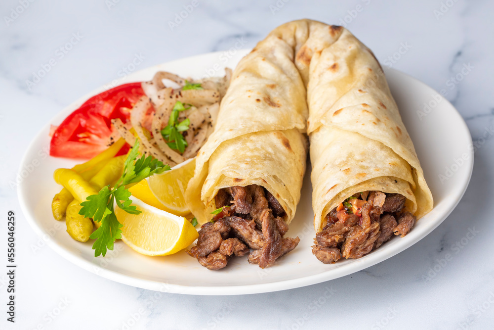
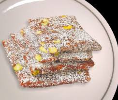
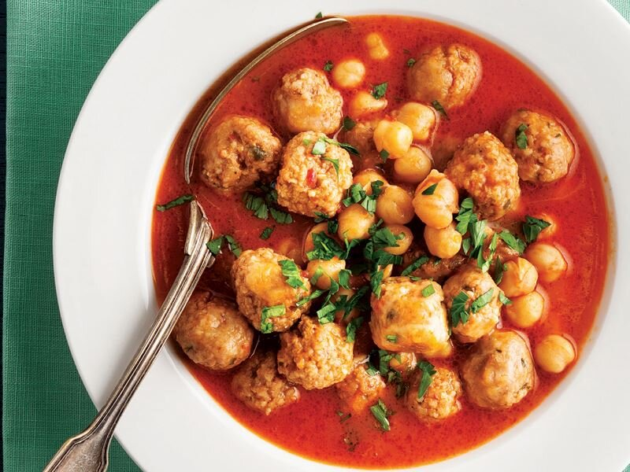

Mersin Lezzetleri
Akdeniz mutfağının en seçkin tatları

Tantuni
Mersin'in dünyaca ünlü sokak lezzeti. İnce kıyılmış et, özel baharatlar ve limonla servis edilir.

Cezerye
Havuç, şeker ve cevizden yapılan geleneksel tatlı. Mersin'in en meşhur el yapımı lezzeti.

Deniz Ürünleri
Taze balıklar, karides ve kalamar... Akdeniz'in bereketli sofrası Mersin'de sizleri bekliyor.

Yöresel Yemekler
Analı kızlı, bumbar, şırdan ve bulgur köftesi gibi geleneksel tatlar damağınızda iz bırakır.
)